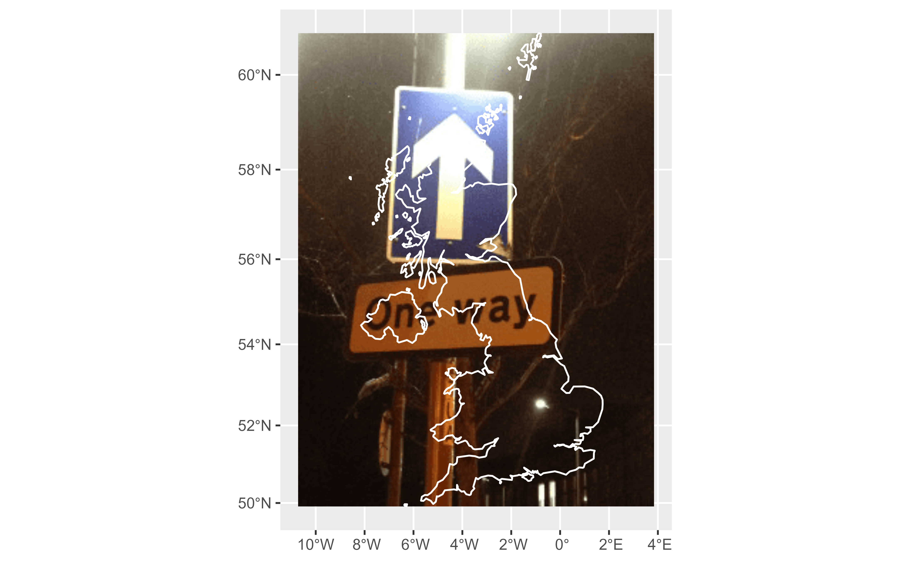
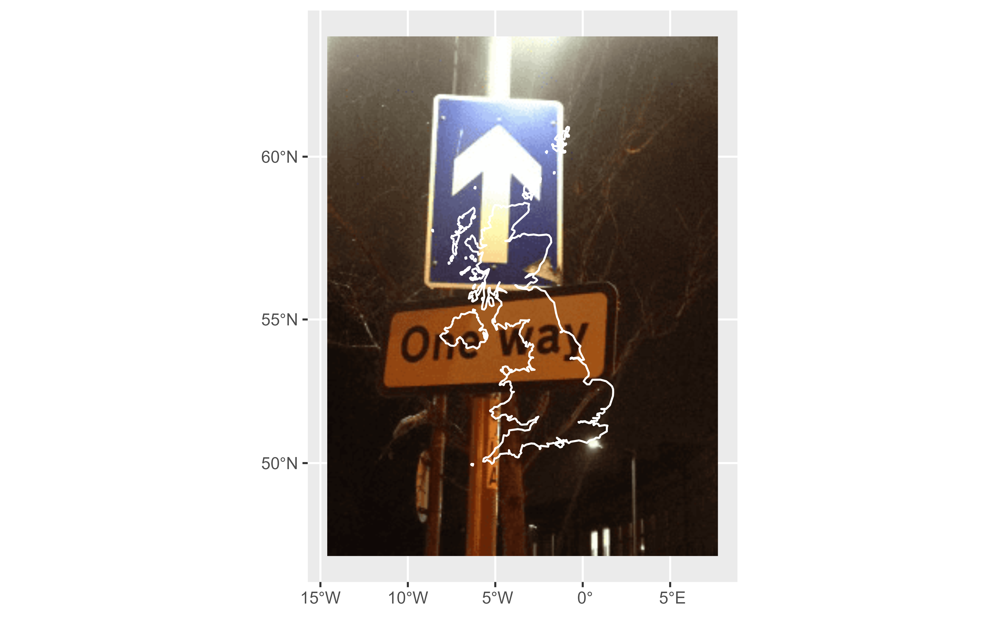
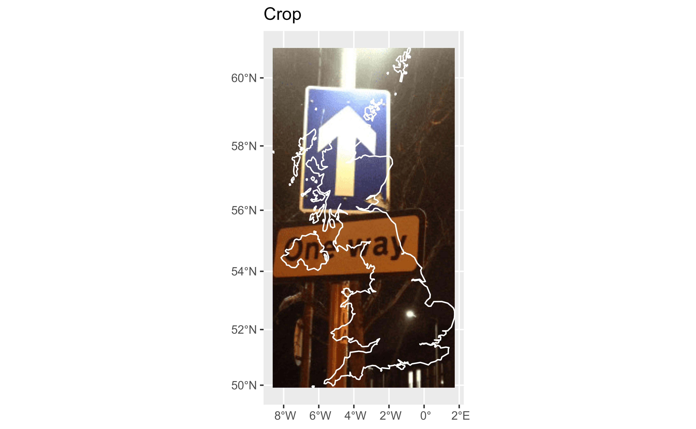
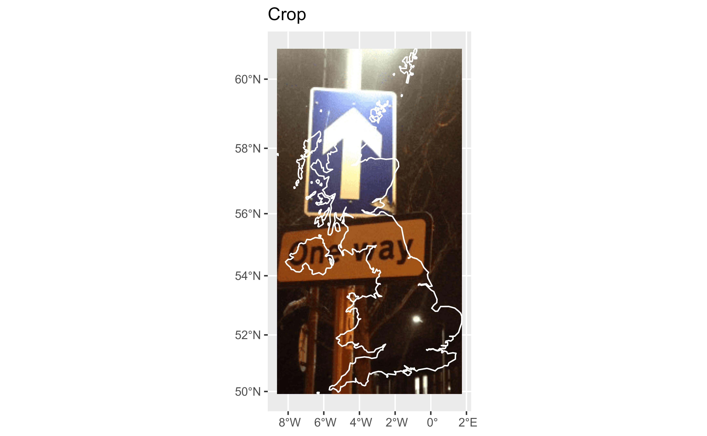
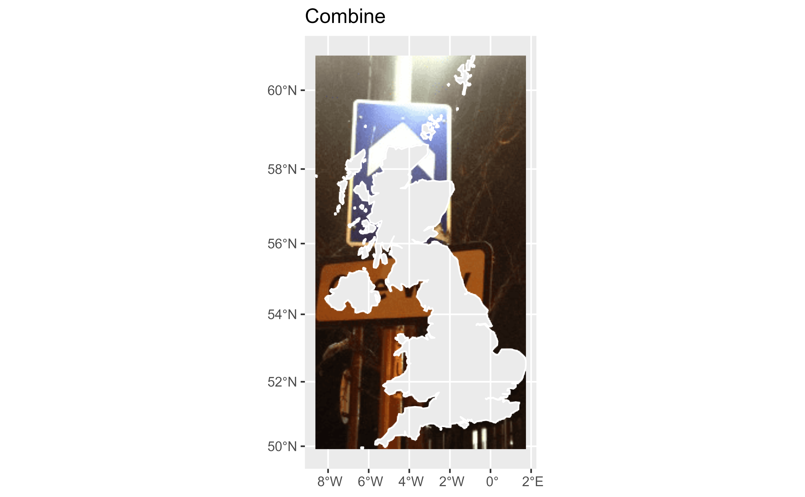
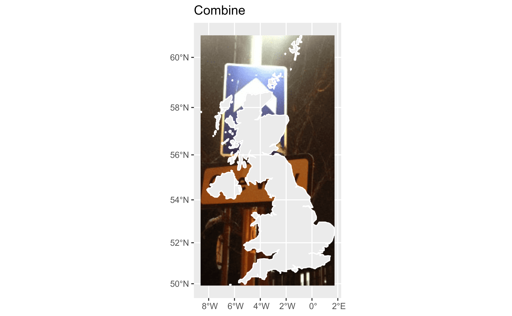

Geotags an image based on the coordinates of a given spatial object.
Usage
rasterpic_img(
x,
img,
halign = 0.5,
valign = 0.5,
expand = 0,
crop = FALSE,
mask = FALSE,
inverse = FALSE,
crs = NULL
)Arguments
- x
R object that may be:
An object created with terra of class
SpatRaster,SpatVectororSpatExtent.A numeric vector of length 4 with the extent to be used for geotagging ( i.e.
c(xmin, ymin, xmax, ymax)).
- img
An image to be geotagged. It can be a local file or an online file (e.g.
"https://i.imgur.com/6yHmlwT.jpeg"). The following image extensions are accepted:png.jpeg/jpg.tiff/tif.
- halign, valign
Horizontal and vertical alignment of
imgwith respect tox. It should be a value between0and1:halign = 0, valign = 0assumes thatxshould be in the bottom left corner of theSpatRaster.halign = 1, valign = 1assumes thatxshould be in the top right corner of theSpatRaster.The default
halign = .5, valign = .5assumes thatxis the center ofimg. Seevignette("rasterpic", package = "rasterpic")for examples.
- expand
An expansion factor of the bounding box of
x.0means that no expansion is added,1means that the bounding box is expanded to double the original size. See Details.- crop
Logical. Should the raster be cropped to the (expanded) bounding box of
x? See Details.- mask
Logical, applicable only if
xis asf,sfcorSpatVectorobject. Should the raster be masked tox? See Details.- inverse
Logical. It affects only if
mask = TRUE. IfTRUE, areas on the raster that do not overlap withxare masked.- crs
Character string describing a coordinate reference system. This parameter would only affect if
xis aSpatExtent,sfg,bboxor a vector of coordinates. See CRS section.
Value
A SpatRaster object (see terra::rast()) where each layer corresponds to
a color channel of img:
If
imghas at least 3 channels (e.g. layers), the result would have an additional property setting the layers 1 to 3 as the Red, Green and Blue channels.If
imgalready has a definition or RGB values (this may be the case fortiff/tiffiles) the result would keep that channel definition.
Details
vignette("rasterpic", package = "rasterpic") explains with examples the
effect of parameters halign, valign, expand, crop and mask.
CRS
The function preserves the Coordinate Reference System of x if applicable.
For optimal results do not use geographic coordinates
(longitude/latitude).
crs can be in a WKT format, as a "authority:number" code such as
"EPSG:4326", or a PROJ-string format such as "+proj=utm +zone=12". It can
be also retrieved with:
See Value and Notes on terra::crs().
See also
From sf:
vignette("sf1", package = "sf")to understand how sf organizes R objects.
From terra:
For plotting:
Examples
# \donttest{
library(sf)
#> Linking to GEOS 3.12.1, GDAL 3.8.4, PROJ 9.3.1; sf_use_s2() is TRUE
library(terra)
library(ggplot2)
library(tidyterra)
#>
#> Attaching package: 'tidyterra'
#> The following object is masked from 'package:stats':
#>
#> filter
x_path <- system.file("gpkg/UK.gpkg", package = "rasterpic")
x <- st_read(x_path, quiet = TRUE)
img <- system.file("img/vertical.png", package = "rasterpic")
# Default config
ex1 <- rasterpic_img(x, img)
ex1
#> class : SpatRaster
#> dimensions : 333, 250, 3 (nrow, ncol, nlyr)
#> resolution : 6484.467, 6484.467 (x, y)
#> extent : -1193414, 427703.2, 6430573, 8589900 (xmin, xmax, ymin, ymax)
#> coord. ref. : WGS 84 / Pseudo-Mercator (EPSG:3857)
#> source(s) : memory
#> colors RGB : 1, 2, 3
#> names : lyr.1, lyr.2, lyr.3
#> min values : 15, 8, 4
#> max values : 254, 255, 254
autoplot(ex1) +
geom_sf(data = x, fill = NA, color = "white", linewidth = .5)

# Expand
ex2 <- rasterpic_img(x, img, expand = 0.5)
autoplot(ex2) +
geom_sf(data = x, fill = NA, color = "white", linewidth = .5)

# Align
ex3 <- rasterpic_img(x, img, halign = 0)
autoplot(ex3) +
geom_sf(data = x, fill = NA, color = "white", linewidth = .5)
 labs(title = "Align")
#> $title
#> [1] "Align"
#>
#> attr(,"class")
#> [1] "labels"
# Crop
ex4 <- rasterpic_img(x, img, crop = TRUE)
autoplot(ex4) +
geom_sf(data = x, fill = NA, color = "white", linewidth = .5) +
labs(title = "Crop")

# Mask
ex5 <- rasterpic_img(x, img, mask = TRUE)
autoplot(ex5) +
geom_sf(data = x, fill = NA, color = "white", linewidth = .5) +
labs(title = "Mask")
labs(title = "Align")
#> $title
#> [1] "Align"
#>
#> attr(,"class")
#> [1] "labels"
# Crop
ex4 <- rasterpic_img(x, img, crop = TRUE)
autoplot(ex4) +
geom_sf(data = x, fill = NA, color = "white", linewidth = .5) +
labs(title = "Crop")

# Mask
ex5 <- rasterpic_img(x, img, mask = TRUE)
autoplot(ex5) +
geom_sf(data = x, fill = NA, color = "white", linewidth = .5) +
labs(title = "Mask")
 # Mask inverse
ex6 <- rasterpic_img(x, img, mask = TRUE, inverse = TRUE)
autoplot(ex6) +
geom_sf(data = x, fill = NA, color = "white", linewidth = .5) +
labs(title = "Mask Inverse")
# Combine Mask inverse and crop
ex7 <- rasterpic_img(x, img, crop = TRUE, mask = TRUE, inverse = TRUE)
autoplot(ex7) +
geom_sf(data = x, fill = NA, color = "white", linewidth = .5) +
labs(title = "Combine")

# RGB channels ------
plot(ex1)
ex_rgb <- ex1
has.RGB(ex_rgb)
#> [1] TRUE
RGB(ex_rgb)
#> [1] 1 2 3
# Modify RGB channels
RGB(ex_rgb) <- c(2, 3, 1)
RGB(ex_rgb)
#> [1] 2 3 1
plot(ex_rgb)
# Remove RGB channels
RGB(ex_rgb) <- NULL
has.RGB(ex_rgb)
#> [1] FALSE
RGB(ex_rgb)
#> NULL
# Note the difference with terra::plot
plot(ex_rgb)
# Mask inverse
ex6 <- rasterpic_img(x, img, mask = TRUE, inverse = TRUE)
autoplot(ex6) +
geom_sf(data = x, fill = NA, color = "white", linewidth = .5) +
labs(title = "Mask Inverse")
# Combine Mask inverse and crop
ex7 <- rasterpic_img(x, img, crop = TRUE, mask = TRUE, inverse = TRUE)
autoplot(ex7) +
geom_sf(data = x, fill = NA, color = "white", linewidth = .5) +
labs(title = "Combine")

# RGB channels ------
plot(ex1)
ex_rgb <- ex1
has.RGB(ex_rgb)
#> [1] TRUE
RGB(ex_rgb)
#> [1] 1 2 3
# Modify RGB channels
RGB(ex_rgb) <- c(2, 3, 1)
RGB(ex_rgb)
#> [1] 2 3 1
plot(ex_rgb)
# Remove RGB channels
RGB(ex_rgb) <- NULL
has.RGB(ex_rgb)
#> [1] FALSE
RGB(ex_rgb)
#> NULL
# Note the difference with terra::plot
plot(ex_rgb)
 # }
# }